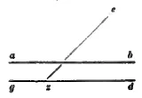
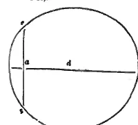
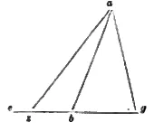
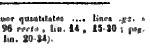
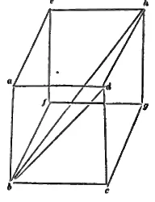
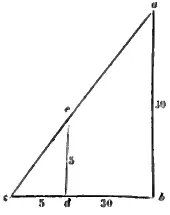
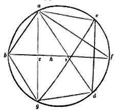

Content of type 'summary'
CAPITULUM I SUMMARY — THE NINE HINDU NUMERALS & PLACE VALUE
English Edition · Latin (1202/1228 / Boncompagni 1857) · GEOMETOR Notes

SUMMARY — DISTINCTIO I: PROLOGUE, PISAN METROLOGY & RECTANGULAR FIELDS
English Edition · Latin (1220 / Boncompagni 1862) · GEOMETOR Notes

SUMMARY — DISTINCTIO II: EXTRACTION OF SQUARE ROOTS
English Edition · Latin (1220 / Boncompagni 1862) · GEOMETOR Notes

SUMMARY — DISTINCTIO III: MENSURATION OF FIELDS, HERON’S PROOF & CIRCLE BOUNDS
English Edition · Latin (1220 / Boncompagni 1862) · GEOMETOR Notes
SUMMARY — DISTINCTIO IV: DIVISION OF PLANAR FIGURES AMONG CONSORTS
English Edition · Latin (1220 / Boncompagni 1862) · GEOMETOR Notes

SUMMARY — DISTINCTIO V: EXTRACTION OF CUBE ROOTS
English Edition · Latin (1220 / Boncompagni 1862) · GEOMETOR Notes

SUMMARY — DISTINCTIO VI: SOLID MENSURATION & THE FIVE REGULAR POLYHEDRA
English Edition · Latin (1220 / Boncompagni 1862) · GEOMETOR Notes

SUMMARY — DISTINCTIO VII: SURVEYING WITH THE QUADRANS
English Edition · Latin (1220 / Boncompagni 1862) · GEOMETOR Notes

SUMMARY — DISTINCTIO VIII: SUBTILITATES GEOMETRICAE & FLOS (1225)
English Edition · Latin (1220 / Boncompagni 1862) · GEOMETOR Notes
CAPITULUM XII.7 SUMMARY — THE RABBIT SEQUENCE & RECURRENCE
English Edition · Latin (1202/1228 / Boncompagni 1857) · GEOMETOR Notes